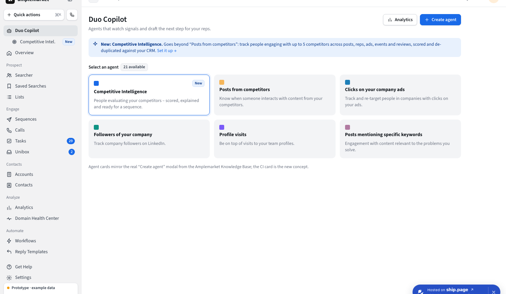
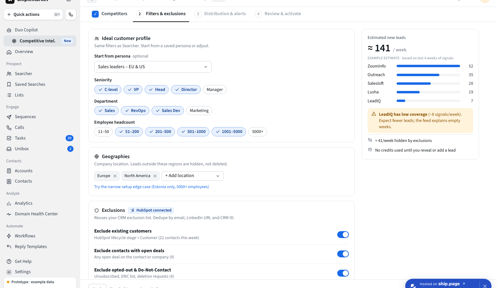
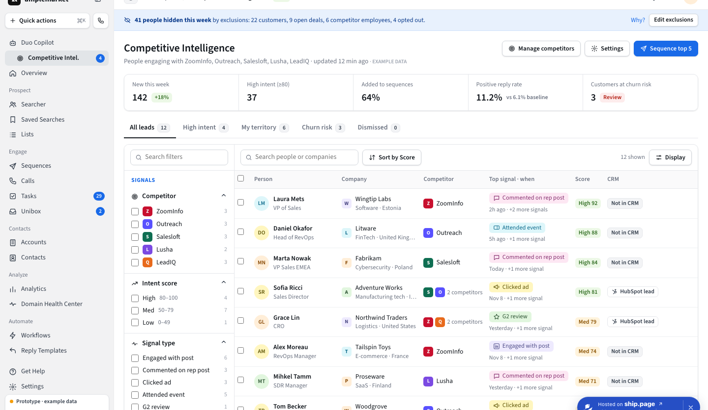
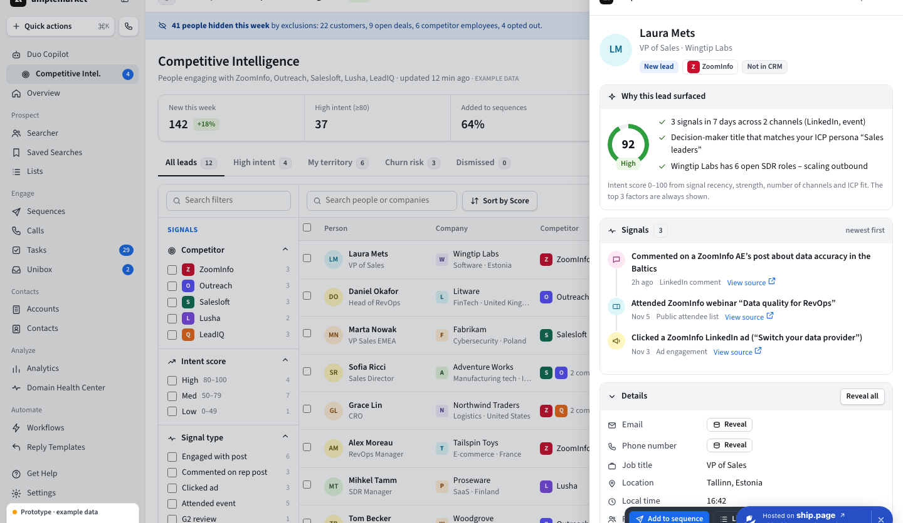
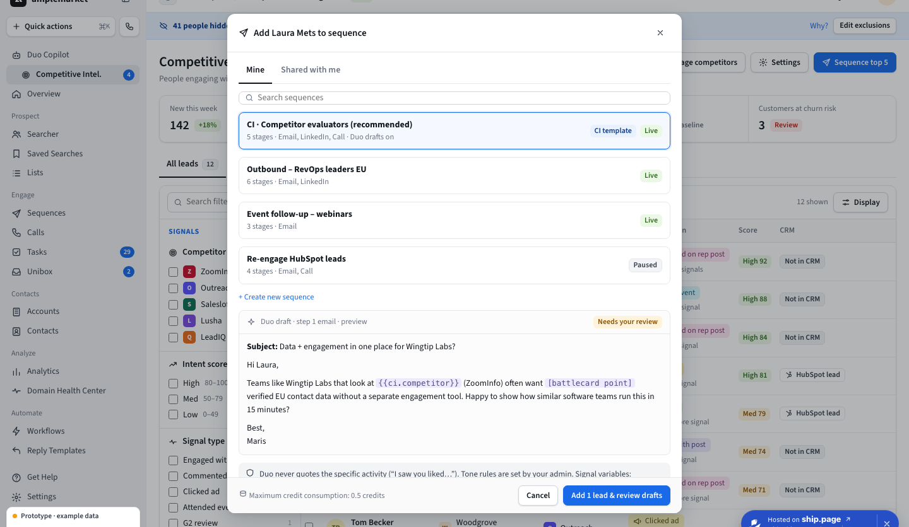
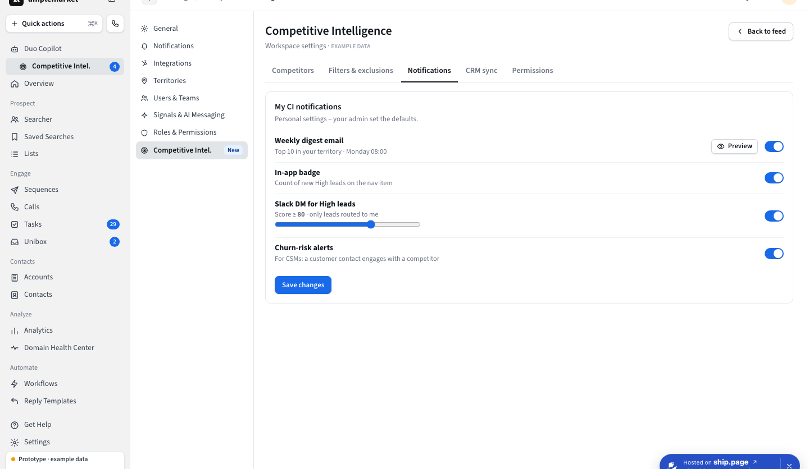
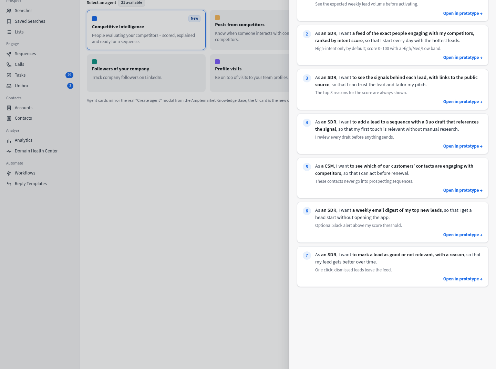

A simple plan: why we need CI, how to check it, how to measure it, how it looks, how to launch it, and what to build first.
CI shows sellers the exact people who are looking at a competitor right now. The seller can write to them before the competitor does. CI uses public signals (competitor ads, LinkedIn posts and employees, events) and gives data about a person, not only a company.
Reps do not know who is in a buying journey, so they send the same cold email to everyone. CI gives a person and a reason to write today. But CI is still a separate view, not connected to sequences, Duo Copilot or Unibox.
Before talking to anyone, write the job the customer wants done and the riskiest assumptions. Each one gets a number, so the team agrees in advance what success means.
Job to be done: “When I plan my weekly outreach, I want to know who is evaluating my competitors right now, so I can contact them while they are still deciding.”
Who else solves this job, how well, and where is the gap? I list alternatives in three groups (intent data vendors, engagement tools with signals, manual workarounds), collect facts from vendor pages, G2 reviews, demos and win/loss notes, and compare them on the same questions: which signal, person or company level, how fresh, what price.
| Alternative | Type | Level | Gap CI can fill |
|---|---|---|---|
| ZoomInfo, Cognism, Apollo | Data vendors with intent | Mostly company | No contact-level competitor signal |
| Outreach, Salesloft | Engagement tools | Person, inside their tool | Do not show who engages with a competitor |
| 6sense, Demandbase, G2 Buyer Intent | Account intent | Company | Cannot name the person |
| Manual LinkedIn watching | Workaround | Person, by hand | Slow, does not scale |
My hypotheses from general market knowledge. Check each row before use.
Result: “Person-level, competitor-specific signals from public data, ready to put in a sequence.” Competitors are behind here, so CI is a differentiator. It must win on accuracy, not on matching features. Risks to check: GDPR, LinkedIn terms, and a bigger vendor copying it.
Opinions can be wrong; behavior shows what people really do. Use data we already have before new research. Examples of what I would look for (illustrative numbers):
Show a prototype to real users before engineers build anything. Does the user understand the value, finish the task, trust the data, accept the price? I run 8–10 one-hour remote interviews: 4 sales development reps, 3 account executives or leaders, 2 customer success managers, 1 revenue operations person. I talk to both Amplemarket customers and non-customers.
Amplemarket’s own sales, customer success and support teams talk to customers every day, so they know the pain first. I run short talks with them and ask:
If interviews and data disagree, I run a short survey with about 50 customers on value and three price options (add-on, higher plan, pay per lead).
| Step | When | Output |
|---|---|---|
| 1. Hypotheses | Week 1 | 3–4 hypotheses with numbers |
| 2. Competitor analysis | Weeks 1–2 | Competitor table, positioning line |
| 3. Existing data | Week 1 | Usage and sales-signal summary |
| 4. Prototype test | Weeks 2–4 | Interview report with clips |
| 5. Internal sales and support | Weeks 2–4 | Pain points and competitor list |
| 6. Bigger check | Weeks 4–5, only if needed | Survey or price test |
I follow one funnel, from the first time an account sees CI to the money it brings. Three headline metrics say if CI works. The other steps show where accounts drop off.
| Metric | Definition | Why it matters | Start target |
|---|---|---|---|
| 1. CI activation rate activation | % of accounts that add a competitor and send their first CI lead to a sequence within 14 days of first opening CI | Shows reps act on a competitor signal. A signal nobody uses has no value. | 50% of accounts |
| 2. Weekly active CI accounts usage | % of CI accounts that add at least 1 CI lead to a sequence in a week | Shows CI is a weekly habit, not a one-time test. Links to renewal and upsell. | 40% after 3 months |
| 3. CI-sourced meetings and ROI outcome | Meetings and closed annual recurring revenue (ARR) from CI leads per active account per month, compared with CI price and other lead sources | The business result. Also proves that people who look at a competitor are more likely to buy. | CI leads convert 1.5x better than other sources; pays back 3x in 90 days |
Guardrail: lead precision. % of flagged people that the customer marks as real competitor evaluators (with a good lead / bad lead button), plus unsubscribe and spam rates on CI sequences. If precision drops, the three metrics above fall later.
The biggest drop between two steps is where I work first. For example, a big drop between steps 2 and 3 means the feed is empty or signals are not clear. Between 3 and 4 it means reps do not trust the lead.
| Step | Question | Metric | Start target |
|---|---|---|---|
| 1. Discovery | Do they notice CI? | % of active accounts that open CI in 30 days | 60% |
| 2. Setup | Do they add competitors? | % that add 1+ competitor | 60% |
| 3. First signal seen | Do they see a real person? | % that open a lead detail in 7 days | 70% |
| 4. Activation | Do they act on it? | % that add a lead to a sequence in 14 days | 50% of accounts |
| 5. First result | Does a reply or meeting follow? | % with a CI meeting in 30 days | 40% |
| 6. Habit | Do they come back weekly? | Weekly active CI accounts | 40% at 3 months |
| 7. Breadth | Do many reps use it? | % of seats using CI monthly | 30% |
| 8. Outcome | Does it make money? | Meetings, ARR, ROI vs other sources | See metric 3 |
| 9. Retention | Still used after 90 days? | % of activated accounts active at week 12 | 60% |
Every feature gets the same set from day one of the internal phase: discovery, activation, usage, weekly retention (at 4, 8 and 12 weeks), frequency, breadth, total active users, outcome and satisfaction (NPS). Events flow from the product into the data warehouse and show on one dashboard per feature. No feature launches without it. CI adds one more: lead precision.
Does CI solve the need? Two simple checks: the share of leads customers mark as good, and a one-question survey after 30 days, “How would you feel if you could no longer use CI?” At least 40% should say “very disappointed”.
I read Amplemarket’s public customer stories for results about competitive signals. Only one fits: Vanta reported a 9x return on investment on signals, six-figure ARR in the first quarter from one campaign, and signal leads with the highest engagement rate of any lead source. This supports metrics 1 and 3.
I built a clickable prototype instead of paper wireframes. The user stories are inside it.
Open the clickable prototype Open the user stories







CI screens are a proposal based on public information (amplemarket.com, help center). No real CI interface was available. All data is example data.
This plan starts when CI is built and works. CI goes live in four phases, then a launch with all channels ready on the same day.
The method follows a recent public integration launch: a small closed group first, access per account, one contact person for feedback, one launch day, and a follow-up campaign for people who set it up but did not use it.
| Phase | Who | What happens |
|---|---|---|
| 1. Internal | Amplemarket’s own sales team (5–10 users), on their own pipeline | Use CI every day, log bugs, check lead quality with the data team. Support and sales learn the product. |
| 2. Closed beta | 15–20 customers who already use sequences, invited by name. Access is switched on per account with a feature flag. | One named contact per customer, a weekly feedback call, and a short “as is” note that the feature is still changing. Interview customers who did not start. |
| 3. Open beta | All customers on plans that include CI. Opt-in banner in the app, no sales push. | Check load, rate limits and sending limits at scale. Test help articles and the in-app tour with real users. |
| 4. General availability | Everyone on eligible plans, on by default | Launch day with all go-to-market channels live. Review the headline metrics after 30 and 90 days. |
Most steps start during the beta phases and run in parallel, so everything is ready on launch day.
| # | Step | Owner | Output |
|---|---|---|---|
| 1 | Set the launch level (full plan, because CI is a new module) and form one cross-team launch team | Product manager, Product marketing | Launch plan with owners |
| 2 | Legal and privacy review of the data sources behind the signals | Product manager, Legal | Approved wording on where signals come from |
| 3 | Value proposition and messaging: target segments, one-line positioning, proof points. Test with closed beta customers. | Product marketing | Messaging document |
| 4 | Content: public feature page, in-app page with FAQ, help articles (what CI is, set-up, how signals are made, privacy), use-case video | Product marketing, Web, Support | Content ready to publish |
| 5 | Enablement for sales, customer success and support: FAQ, short training, demo script, comparison card against main competitors | Product marketing, Sales enablement | Trained customer-facing teams |
| 6 | Launch day: press release, social posts, launch email to eligible customers, in-app message, feature page live | Product marketing, Marketing, Web | Everything live on the same day |
| 7 | Follow-up campaign: re-engage accounts that added competitors but sent no sequence, email customers who have not opened CI, publish beta customer stories | Customer marketing, Customer success | Higher activation rate |
| 8 | Post-launch check on the funnel: opened CI, added a competitor, contacted a first lead, active every week | Product manager, Data analyst | Report on what to fix first |
Step 8 uses the same funnel as the success metrics in question 2. The biggest drop decides where the follow-up campaign points.
Track from day 1: CI opened, competitor added, lead viewed, lead added to a sequence, reply, meeting booked, “bad lead” clicked.
CI plus three other modules must ship by the end of the year. I score every module on the same five questions, so the choice is based on data and not on opinions.
| Dimension | Data | Where to get it |
|---|---|---|
| Revenue | ARR lost or at risk in 12 months because of this module | Churn survey, CRM lost-deal reasons, finance |
| Strategy | Feedback cases in 6 months, NPS of users | Support tool, call notes, G2 reviews, NPS survey |
| Customer value | Share of customers who could use it, and how often | Product analytics, interviews |
| Tech and effort | Engineers needed, product maturity, fit with strategy | Engineering estimate, strategy documents |
| Competition | Better, equal or behind, per competitor | G2, vendor pages, demos, win/loss notes |
Each answer becomes a score from 1 to 5. The final score is the average of the five (equal weights, 20% each). Ties are broken by strategic score. A low competitive score means we are ahead, so it is a differentiator. A high score means we must catch up.
I scored 26 Amplemarket products. Top of the list and the four modules planned this year:
| Rank | Product | Score | Planned this year | Why |
|---|---|---|---|---|
| 1 | Multichannel Sequences | 4.00 | No | Core product, biggest revenue |
| 2 | Searcher | 3.87 | No | Core search and data |
| 3 | Duo Copilot | 3.73 | Yes | Best fit with company direction, large build |
| 7 | Competitive Intelligence | 3.30 | Yes | Unique differentiator, medium effort |
| 10 | Intent Signals | 3.20 | Yes | Cheap to build, extends existing signals |
| 10 | Parallel Dialer | 3.20 | Yes | Heavy build, competitors are mature |
All inputs are my estimates, not Amplemarket data. Replace them with real data from the owners above. The scales can be edited in the sheet’s Config tab.
Open it online or download the file. It has four tabs: the matrix, how to score, the scales, and the competitor view.